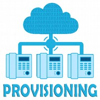

The Web
Categorie
Full Stack Development
Profiel Full Stack Web Developer
 Naast ontwikkelen van Websites, Apps en webApps beheerst de Full Stack Web Developer ook de kennis en vaardigheid om OTAP omgevingen op te zetten, te deployen en beheren. De term voor dit proces wordt ook wel DevOps genoemd - Development en Operations.
Naast ontwikkelen van Websites, Apps en webApps beheerst de Full Stack Web Developer ook de kennis en vaardigheid om OTAP omgevingen op te zetten, te deployen en beheren. De term voor dit proces wordt ook wel DevOps genoemd - Development en Operations.
Zoals later in deze guide bij DevOps aan de orde komt zijn Agile en CI/CD daarbij kernbegrippen. Omgevingen zijn niet meer statische entiteiten zoals 'vroeger' maar dynamisch, schaalbaar en zó mobiel dat ze in 'no time' zich over de hele wereld kunnen verspreiden. Gelet op aard en karakter zijn er specifieke tools beschikbaar voor management van OTAP omgevingen.
→ zie: Wikipedia DevOps
→ zie: Wikipedia Agile
→ zie: Wikipedia CI
→ zie: Wikipedia CD
Taken
Beheersing skill set en taken Back End Web Developer Database wordt verondersteld.
Voor Full Stack Web Developer komt erbij de volgende reeks taken. Let op, de taken zijn chronologisch genummerd waarbij het een volgt uit het ander, met als eindproduct een volledig functionerende DevOps:
1. Machine Management
2. Provisioning
3. Resource Management
4. Containerization
5. Job Sheduling
6. Container Orchestration
7. Application Orchestration
De Full Stack Web Developer beheerst alle onderstaande tools om taken te kunnen verrichten.
1. Machine Management
 Met machine management wordt bedoeld het identifiseren, selecteren en realiseren van "computers" waarop tooling en software functioneert. Met computers wordt bedoeld bare metal oftewel fysieke, dan wel virtuele apparatuur of servers.
Met machine management wordt bedoeld het identifiseren, selecteren en realiseren van "computers" waarop tooling en software functioneert. Met computers wordt bedoeld bare metal oftewel fysieke, dan wel virtuele apparatuur of servers.
Zoals eerder in deze guide bij OTAP omgevingen genoemd zijn er vele soorten van machines:
- Installatie van Virtual Machine zoals VirtualBox of VMware
- Installatie van dual boot met 2e of meer OS
- Dedicated computer inrichten (Pi4?) of ombouwen bestaande computer
- Cloud huren Virtual Machine bij Google GCP, AWS, Azure of Oracle
- Cloud huren via shared hosting met meerdere klanten op één server
- Cloud huren via Virtual Private Server als dedicated "eigen" machine
Aangezien voornoemde varianten van machines en hun management in voorgaande Web Developer profielen inhoudelijk zijn behandeld volgt hier verder geen verdere uitdieping en wordt verwezen naar betreffende passages alwaar uiteenzetting plaatsvindt.
Product van Machine Management is een overzicht van on premises geinstalleerde, dan wel en of cloud machines / servers mét dus alle LAN of WAN (lees: local netwerk of internet) IP adressen daarvan.
Deze IP adressen zijn nodig voor verder uitvoeren van provisioning en zijn de basis voor werkzaamheden aldaar. Immers, die machines (nodes) zijn de target voor verdere installatie!
2. Provisioning

Provisioning is een reeks acties om een server met geschikte systemen, gegevens en software voor te bereiden en gereed te maken voor netwerkgebruik.
→ zie: Wikipedia Provisioning
Typische taken bij het inrichten van een server zijn: selecteer een server uit een pool van beschikbare servers (zie bij 1 hiervoor), laad de juiste software zoals besturingssysteem, apparaatstuurprogramma's, middleware en applicaties, pas het systeem en de software op de juiste manier aan en configureer deze om een boot te maken of te wijzigen image voor deze server en wijzig vervolgens de parameters, zoals het IP-adres, de IP-gateway om bijbehorende netwerk- en opslagbronnen te vinden om het systeem te controleren.
- Voorwoord Vagrant & Ansible
-
In de praktijk blijkt dat provisioning van nieuwe OTAP omgevingen geschiedt in twéé stappen:
- Vagrant deployed mbv IP adressen uit (1) de nieuwe omgevingen
- Ansible configureert de nieuwe omgevingenDit voorwoord is er speciaal op gericht om te wijzen op het feit dat Vagrant tijdens deployment van nieuwe omgeving óók de configuratie daarvan kan uitvoeren. En bijna alle tutorials laten dat dan ook zien. Echter, de toeschouwer kan daardoor in verwarring raken over wat dan nog het nut is van Ansible. Immers, laatstgenoemde doet hetzefde en schijnt niks toe te voegen.
Maar Ansible voegt wél iets toe, namelijk het eenmaal gedeclareerde Ansible task-bestand, kan 'later' ook ingezet worden om een omgeving te controleren op juistheid, Óf met datzelfde task-bestand changes doorvoeren op de omgeving. Want(!) als Ansible constateert dat iets is zoals het moet zijn dan negeert Ansible betreffende task en gaat gewoon door. Of als er iets onbreekt of verkeerd ingesteld staat, dan corrigeert of vult Ansible dat aan.
Zodoende is Ansible na éénmalige (Vagrant) deployment van omgevingen een prima long term support configuratie management tool van omgevingen. Dus dat is de reden dat in de praktijk blijkt dat Vagrant wordt gebruikt voor deployment om daarna Ansible te starten voor configuratie van die omgeving.
Deployment via Vagrant
 Vagrant is free open source software voor het bouwen en onderhouden van draagbare virtuele software ontwikkelomgevingen, voor VirtualBox, KVM, Hyper-V, Docker containers, VMware en AWS.
Vagrant is free open source software voor het bouwen en onderhouden van draagbare virtuele software ontwikkelomgevingen, voor VirtualBox, KVM, Hyper-V, Docker containers, VMware en AWS.
→ zie: Wikipedia Vagrant
→ zie: Website Vagrant download & get started
- Kenmerken
-
Vagrant maakt gebruik van een declaratief configuratiebestand dat een geheel systeem beschrijft. OS, pakketten, besturingssysteemconfiguratie, gebruikers en meer. Machine- en softwarevereisten worden geschreven in een bestand met de naam "Vagrantfile" om de nodige stappen uit te voeren om een omgeving aan te maken.
Vagrantfile kan op verschilende manieren worden ingezet, bijvoorbeeld:
- Push: vanuit master worden slave target machines ingericht, of;
- Pull: Vagrantfile kopieeren naar target machines om zo daar omgeving te deployen→ zie: YouTube Videotorial Vagrant
Configuratie via Ansible
 Ansible is een (community free) open source provisioning, configuratiebeheer en applicatie implementatie tool.
Ansible is een (community free) open source provisioning, configuratiebeheer en applicatie implementatie tool.
→ zie: Wikipedia Ansible
→ zie: Website Ansible download & get started
- Kenmerken
-
Ansible werkt met meerdere systemen in uw infrastructuur door delen van de inventaris van Ansible te selecteren, opgeslagen als bewerkbare, versie compatibele ASCII tekstbestanden. Deze inventaris is niet alleen configureerbaar, maar u kunt ook meerdere inventarisbestanden tegelijkertijd gebruiken en inventaris ophalen uit dynamische of cloudbronnen of verschillende formaten (YAML, INI, enz.).
Elke machine waarop Ansible hulpprogramma's zijn geïnstalleerd, kan gebruikmaken van een reeks bestanden en mappen om andere nodes te orkestreren. De afwezigheid van een centrale serververeiste vereenvoudigt de planning voor disaster en recovery planning aanzienlijk. Nodes worden beheerd door deze controlerende machine - meestal via SSH. De controlerende machine beschrijft de locatie van nodes door zijn inventaris.
Gevoelige gegevens kunnen worden opgeslagen in gecodeerde bestanden met behulp van Ansible Vault. In tegenstelling tot andere populaire software voor configuratiebeheer gebruikt Ansible een architectuur zonder agent, met Ansible software die normaal niet actief is of zelfs op het gecontroleerde node is geïnstalleerd. In plaats daarvan orkestreert Ansible een node door modules op de node tijdelijk te installeren en uit te voeren via SSH.
Voor de duur van een orkestratietaak communiceert een proces dat de module uitvoert met de controlerende machine via een op JSON gebaseerd protocol via de standaard invoer en uitvoer. Wanneer Ansible geen node beheert, verbruikt het geen bronnen op het node omdat geen daemons geïnstalleerde software uitvoeren.
Bijgaande videotorial zit een fout, namelijk de man spreek terecht over Ansible als zijnde PUSH tool, maar in de slides staat PULL.
→ zie: YouTube Videotorial AnsibleBijgaande videotorial is provisioning compleet uitgewerkt
→ zie: YouTube Videotorial Vagrant met VirtualBox & Ansible
- Meerdere configuratie tools
-
Naast Ansible zijn er ook andere configuratie tools. Deze doen ongeveer allemaal hetzelfde maar dan net even anders. Men kan zich zelf verdiepen in welke de voorkeur geniet. Onderstaande tutorial maakt vergelijking tussen tools Chef, Puppet, Ansible en Saltstack.
3. Resource Management
Bij Resource Management wordt in dit verband gesproken als DataCentrum OS (DC/OS) waarbij verschillende tools, bijvoorbeeld bij onderstaand verder uitgewerkte tool Apache Mesos, gezamenlijk alle beschikbare nodes beheerd.
→ zie: Wikipedia DataCentrum OS
Geautomatiseerd beheer geschiedt op bestaande nodes zoals boven bij (1) beschreven en kunnen zijn on premises geinstalleerde, dan wel en of cloud machines en servers naar gelang gebruik in productie (de Ops uit DevOps), met monitoring van need to up or down scaling.
Tevens kan geautomatiseerd met een vooraf aangegane account bij Cloud provider nog niet gealloceerde nodes dynamisch allocated en provisioned (deploy, configure), alsook gekilled worden.
- DC/OS Mesospehere
-
DC/OS Mesosphere is een free open source gedistribueerd operating systeem gebaseerd op Apache Mesos. DC/OS Mesospehere categoriseert componenten als in gebruikersruimte of kernelruimte. De kernelruimte omvat de Mesos master en agents, terwijl de gebruikersruimte verschillende systeemcomponenten van het DC/OS omvat.
→ zie: Website DC/OS download & get startedDeze componenten omvatten onder andere Admin Router, een interne load balancer, Cosmos, een API-service voor interne verpakkingen, Exposant, een Java supervisorsysteem voor ZooKeeper, Marathon, een Apache Mesos framework voor container orkestratie, Mesos-DNS, een interne DNS-service.